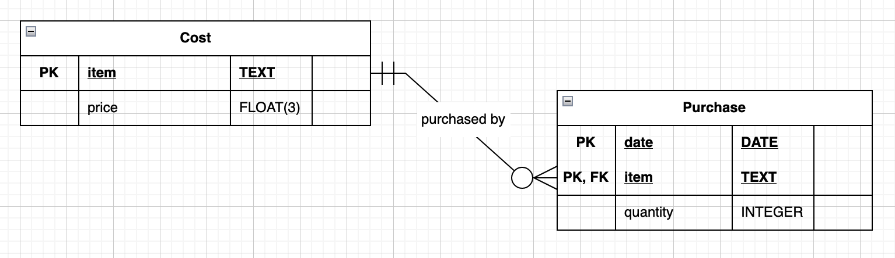

Database Basics: Databasics
CIS 112, Dr. Ladd
Data and Information
What is Data?

Individual observations made in a specific context.
Data is something that people make.

What is Information?
In our context, information is generated by analyzing data.
What is a Database?
A shared and stored collection of related data.
How else might you store data?
What are databases for ?
The 4 Characteristics of Databases
- A database represents data (not information).
- A database is built for a purpose.
- A database is logical and internally consistent.
- A database is queryable.
The Relational Model
Edgar Codd

“A Relational Model of Data for Large Shared Data Banks,” IBM Research Lab, 1970
Preserving the connections between data independently and consistently
Relational databases don’t depend on the way users will interface with the data, and all of the data can be easily referenced.
An example relational table
Criteria for Relational Tables
- Rows contain data about an entity.
- Columns contain data about an entity’s attributes.
- Fields contain a non-empty atomic data value.
- Attributes conform to a specific format.
- Each column has a unique name.
- The order of rows and columns may not affect the relation.
- Each record must be unique, such that a set of attributes identify each entity.
Is this a relational table?

Dependencies
How do tables relate to one another?
“A functional dependency is a relationship between two sets of attributes in a database, where one set (the determinant) determines the values of the other set (the dependent).”
Types of functional dependencies
- full functional dependency: one and only one value of the determinant attribute determines one and only one value of the dependent attribute
- partial functional dependency: a dependency that exists between a subset of the (composite) primary key and one or more dependent attributes
- transitive functional dependency: a dependency that exists between two or more non-key attributes
Dependencies can help identify and reduce data redundancy.
Dependencies are defined by keys.
- Candidate Key: any attribute or set of attributes which uniquely identify each entity
- Primary Key: the developer-chosen candidate key.
- Secondary Key: any non-primary candidate key; typically used as an index.
- Foreign Key: a primary key from an external relation.
- Composite Key: any key comprised of more than one attribute.
Dependency Diagrams

How to Draw a Dependency Diagram
- Identify the primary key (or composite key).
- Draw arrows from the primary key(s) to all other attributes.
- If there is a composite key, look for partial dependencies between part of the key and any other attributes.
- Look for transitive dependencies between any non-key attributes.
You can turn the diagram into notation of the functional dependencies.
(Building, Number) → (nBed, nBath)
(Building) → (StreetAddress)
This follows the form:
Determinants → Dependents
These functional dependencies will become two tables.
BUILDING(Building, StreetAddress)
APARTMENT(Building, Number, nBed, nBath)
This is a schema, and it follows the form:
TABLE(PrimaryKey, ForeignKey, Attribute)
List all of the functional dependencies.
| Month | Day | Year | Item | Price | Quantity |
|---|---|---|---|---|---|
| 8 | 11 | 2023 | Apple | $3.99 | 2 |
| 8 | 14 | 2023 | CokeZero | $4.99 | 3 |
| 8 | 14 | 2023 | Apple | $3.99 | 5 |
Which column or set of columns might form the primary key of this table?
Normalization
Normalization organizes data based on functional dependencies in order to remove potential redundancies.
Three Stages of Normalization
- First Normal Form (1NF): follows all criteria of Codd’s Relational Model, with primary key identified
- Second Normal Form (2NF): all partial dependencies removed
- Third Normal Form (3NF): all transitive dependencies removed
- There are more that typically aren’t used!
Making a dependency diagram prepares you to normalize!
You don’t always want to fully normalize your data.
Some data (like dates) are better kept together for ease of use and performance reasons, even if that means the database doesn’t follow every normal form. Returning the database to this state is called denormalization.
Let’s Practice Normalization!
Follow these steps:
- Rewrite the table so it’s in 1NF (i.e. so it follows Codd’s relational model).
- Draw the dependency diagram and identify the primary key(s).
- If necessary, redraw the dependency diagram so it’s in 2NF. Create the accompanying schema.
- If necessary, redraw the dependency diagram so it’s in 3NF. Create the accompanying schema.
We’ll try this one together.
Data Integrity
Data integrity “refers to the accuracy and consistency (validity) of data over its life cycle.”
ALCOA: Data should be attributable, legible, contemporaneous, original, and accurate.
Types of Data Integrity
- Entity integrity: primary keys represent one and only one entity
- Referential integrity: foreign keys define connections between tables
- Domain integrity: values in a database follow a set format
- User-defined integrity: users can define new data and its constraints
ERDs
Entity relationship diagrams (ERDs) document the database schema to show:
- tables and their connections
- attributes (i.e. columns)
- data types
- constraints
Three Types of ERDs
- Conceptual: documents the entities and the cardinality of their relations.
- Logical: documents the attributes that establish the formal connections.
- Physical: documents the way the schema is stored, including data types and constraints.
Databases store data in binary!
A bit (binary digit) stores a one or a zero. Data is stored in bytes, a series of 8 bits.
An example of a number stored in 8 bits (1 byte):
Common Data Types
- CHAR: a single character, e.g. a letter, number, or symbol (1 byte)
- TEXT: a sequence of characters that forms a string (1 byte per character)
- INTEGER: a whole number, either positive or negative (typically 4 bytes)
- FLOAT(P): a numeric value that can have a decimal point. Supports the provided “floating point” precision (P, or the number of significant digits to be stored). (at least 4 bytes)
- BOOLEAN: a binary choice, e.g. True or False (1 byte)
NULL values are not stored in bytes!
Minimize NULL values to use your storage wisely.
How to Draw an ERD
A simple example
| date | item | price | quantity |
|---|---|---|---|
| 8-11-2023 | Apple | $3.99 | 2 |
| 8-14-2023 | CokeZero | $4.99 | 3 |
| 8-14-2023 | Apple | $3.99 | 5 |
Every table is a box with the table name, all its attributes and data types, and PKs and FKs identified.
The box should also include possible constraints.
- NOT NULL: the attribute is not permitted to contain a null value
- UNIQUE: the stored value may not match any other entity’s value for that attribute.
- PRIMARY KEY (enforces NOT NULL and UNIQUE)
- FOREIGN KEY (enforces NOT NULL)
Lines between boxes show relationships.
Relationships can be strong or weak. Weak relationships are existence-dependent.
Cardinality/connectivity shows the kind of relationship.
Make sure to consider flow and readability.
- Consider the order of your tables left to right.
- Lines shouldn’t criss-cross.
- Ends of lines should point at the correct PKs/FKs.
